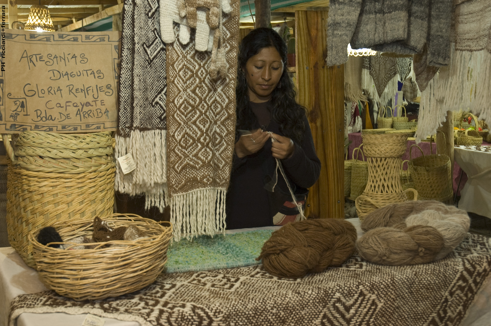
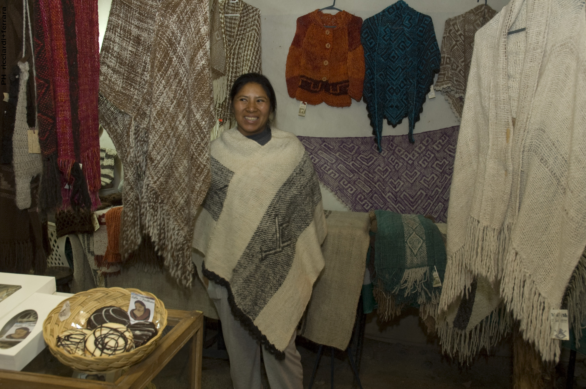
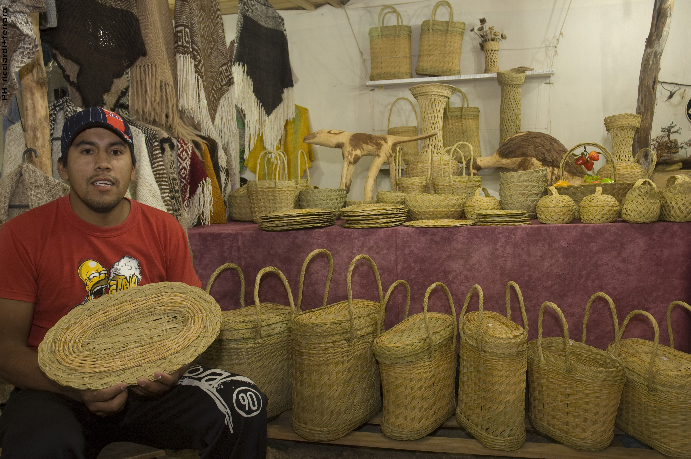
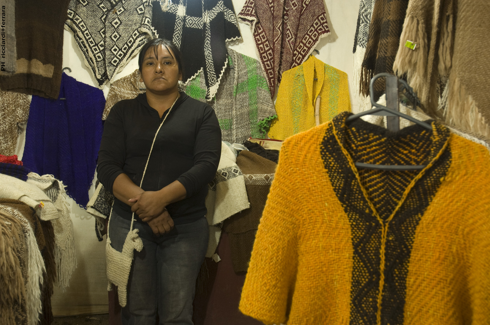

Nuestro Trabajo
Una muestra viva del oficio artesanal
Nuestro trabajo reúne piezas textiles, objetos utilitarios, cerámica, indumentaria y producciones artesanales realizadas por integrantes de la asociación. Cada obra expresa saberes locales, oficio manual y una forma colectiva de sostener la cultura del trabajo artesanal en Cafayate.




